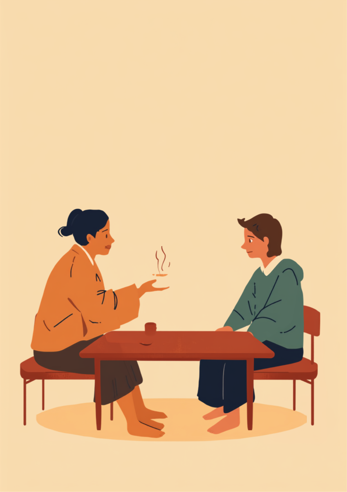
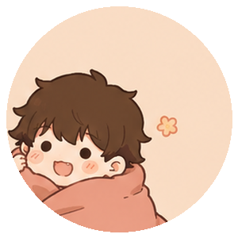
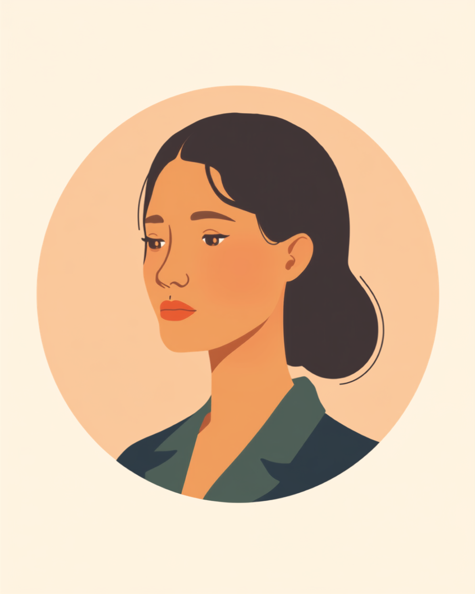
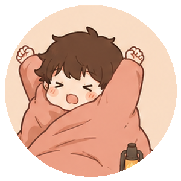

来客用の湯呑みをお盆に乗せて運ぶとき、カタカタと小さな音が鳴る。それだけのことなのに、その日一日の気分が決まってしまうことがある。就労支援の現場で出会ってきた「手の震え」を抱えながら働く方たちの話をもとに、震えそのものより厄介な周りの反応との付き合い方を整理しました（2026年9月時点の情報です）。
PR



震えているのは手だけなのに、部屋の空気まで変わった気がしてしまう
お茶を出すたび、湯呑みがカタカタ鳴る

手の震えの原因はひとつではなく、本態性振戦と呼ばれるものなど、いくつかの可能性が考えられるとされています。震え以外に目立った症状が出ないことも多く、周りからは体調不良や緊張のように見えてしまいがちです。まめざる
就労支援の現場で関わってきた中で、手の震えを抱えながら働く方から何度も聞いた場面があります。来客にお茶を出すとき、盆の上で湯呑みがかすかに揺れ、カタカタと音が鳴る瞬間です。本人にとっては慣れたはずの動作なのに、その日に限って手元に視線が集まっている気がして、余計に力が入ってしまう。そうしてまた震えが強くなる、という悪循環です。
震え自体は、命に関わるようなものではないことがほとんどだと言われています。それでも、会議室に湯呑みを運ぶ、契約書にサインする、名刺を渡す。そうした「人に見られながら手を使う」場面が、普通の仕事の中には想像以上に多く紛れ込んでいます。
!
ここで紹介する内容は、複数の方から伺った場面を組み合わせて再構成したものです。震えの原因や程度、困りやすい場面には個人差があるため、気になる症状がある場合は自己判断せず医療機関に相談することをお勧めします。
「営業職で3年目なんですけど、名刺交換のときに手が震えて、相手に渡す瞬間だけ毎回変な間ができるんです。『大丈夫ですか?』って心配されたことも何度かあって、そのたびに『あ、大丈夫です、体質なんで』って早口で返すのがパターンになってます。正直言うと、初対面の相手の前でだけ症状が出やすい気がして、営業の仕事自体を選んだのが失敗だったのかなって考えた時期もありました。」
30代・男性（手の震え・営業職）
「大丈夫?」と聞かれるたび、余計に強く震える
手の震えのやっかいなところは、指摘されるとかえって症状が強く出やすいと言われている点です。「震えてるけど大丈夫?」と心配して声をかけてもらえるのはありがたいことのはずなのに、その一言で意識が手元に集中してしまい、震えが増してしまう。本人からすると、心配されればされるほど動けなくなるという、なんとも言えない感覚が残ります。
i
強い不安や緊張が続くと震えが増強しやすいという悪循環は、医療機関のサイトでもたびたび説明されています。震えを意識しないようにと言われても難しいものなので、責めるような聞き方を避け、必要な場面だけさりげなく手を貸す関わり方が助けになる場合があるようです。
相談の一コマ

相談者
同僚が親切のつもりで「震えてるけど大丈夫?」って毎回聞いてくるんですけど、聞かれるたびに余計震えが強くなる気がして、どう返したらいいか分からないんです。

まめざる
心配して声をかけてくれているのに、それがしんどいというのは伝えづらいですよね。でも指摘されると強く出やすいというのは、あなたの気の持ちようの問題ではないんです。
相談者
そうなんですね。でも「聞かないでください」って言うのも、なんだかきつく聞こえそうで言えなくて。
まめざる
「心配ありがとう、でも聞かれるとかえって意識しちゃうから、次からはそっとしておいてもらえると助かる」くらいの伝え方をしている方もいますよ。相手の気遣いを否定せずに済む言い方を、次の章で一緒に考えてみましょう。
「昨日飲みすぎた?」に、どう答えるか
手の震えをめぐる誤解として、当事者からよく聞くのが「お酒の飲みすぎ?」「二日酔い?」という言葉です。悪気なく言われることがほとんどだとは分かっていても、毎回同じ説明を繰り返すのは地味に体力を削られる作業だという声もあります。
場面によって、目立ちやすさは変わる
すべての場面で同じように震えが目立つわけではなく、人に見られているかどうかと動作の細かさによって、目立ちやすさが変わるという声が多く聞かれます。
震えやすさは、見られているかどうかと動作の細かさで変わりやすい
この傾向を知っておくと、「今日はお茶出しがあるから、いつもよりゆっくり動こう」というように、自分なりの心構えを作りやすくなるという声もあります。とはいえ、これはあくまで一つの傾向であり、すべての人に当てはまるわけではありません。
「経理をしています。50代になってから震えが出るようになって、伝票にサインするたびに字がミミズみたいになるのがずっとコンプレックスでした。半年くらい前、隣の席の子に『具合悪いんですか?』って聞かれて、その場では『大丈夫』としか言えなかったんですけど、あとで『実は昔からで、お酒とかとは関係ないんだ』って伝えたら、それ以降は特に何も聞かれなくなりました。正直、もっと早く言えばよかったなと思ってます。」
50代・女性（手の震え・経理職）
周りに話すかどうか、ずっと迷っている
震えについて周りに話すかどうかは、簡単に決められることではありません。話せば楽になるという場合もあれば、話しても「気にしすぎじゃない?」と流されてしまい、かえってモヤモヤが残ったという声もあります。どちらが正解ということはなく、状況や相手によって結果が変わってくるというのが実際のところのようです。
話した場合・話さなかった場合、両方の声
- 信頼できる上司にだけ伝えたら、以降は聞かれなくなり気持ちが楽になったという声
- 伝えたつもりが「気にしすぎ」と流され、余計に孤独感が増したという声
- 誰にも話さず、毎回その場しのぎの説明で乗り切っているという声
- 親しい同僚にだけ話し、それ以外の場では特に触れないという中間的なやり方をしている声

話せば必ず理解されるとは限りませんし、話さないままでも困らない場面もあります。全員に公表する・しないの二択ではなく、「困りやすい場面が近いときだけ、その相手にだけ伝える」という中間的な選び方をしている方も多いようです。まめざる
「昨日飲みすぎた?」と聞かれたときの返し方も、あらかじめ自分の中に一言用意しておくと、とっさの場面でも慌てずに済むという声があります。「体質的なもので、お酒とは関係ないんです」くらいの短い返答を決めておき、それ以上深く聞かれたときだけ必要な範囲で補足する、という進め方をしている方もいます。
何科に行けばいい、使える制度と相談先
まずは神経内科への相談から
手の震えが気になる場合、まずは神経内科（脳神経内科）を受診するケースが多いとされています。原因によって対応の仕方も変わってくるため、自己判断で様子を見続けるより、一度専門的な診察を受けておくと安心材料になる場合があります（2026年9月時点の情報です）。
i
震えの原因は一つではなく、生活習慣や他の要因が関わっている場合もあるとされています。ここでは特定の病名を断定するものではなく、気になる症状がある場合の相談先の一例として紹介しています。
身体障害者手帳という選択肢
震えの原因や日常生活への影響の程度によっては、身体障害者手帳の対象になる場合があるとされています。対象になるかどうかは個別の判断が必要なため、詳しくは主治医や自治体の障害福祉窓口に確認するのが確実です（2026年9月時点の情報です）。
相談できる窓口
- 神経内科・脳神経内科（原因の確認や、服薬による仕事への影響についての相談）
- 職場に選任されている産業医（50人以上の事業場に選任義務あり）
- 自治体の障害福祉窓口、身体障害者手帳の相談窓口
- 就労移行支援事業所（働き方の相談や、職場との調整）
震えの原因や程度、困りやすい場面には個人差があります。この記事の内容がそのまま当てはまるとは限らないため、実際の判断は主治医・支援者・自治体の窓口とよく相談しながら進めることをお勧めします（2026年9月時点の情報です）。
つらいのは震えそのものより、それを見た人の反応にいちいち対応することかもしれません。全部を説明しようとせず、必要な相手にだけ、必要な分だけ伝える。それだけで、日々の負担はだいぶ変わってきます。
よくある質問
Q. 手の震えが気になるとき、何科を受診すればいいですか？
手の震えの原因はいくつか考えられるため、まずは神経内科（脳神経内科）を受診するケースが多いとされています。症状の出方によっては内科やかかりつけ医からの紹介という形になることもあるため、迷う場合はまず近くの内科に相談してみる方法もあります（2026年9月時点の情報です）。
Q. 職場に手の震えのことを伝えるべきですか？
必ず伝えなければならないというものではありません。ただし、サインや来客対応など特定の場面で困りやすい場合は、症状の全部を説明するのではなく「この作業のときに手元がふらつくことがある」など、業務に関わる部分だけを信頼できる相手に伝えている方もいます。
Q. 「お酒のせいでは」と誤解されたとき、どう説明すればいいですか？
その場で細かく説明する必要はないとされています。「体質的なもので、お酒とは関係ないんです」と一言添えるだけで十分というケースも多いようです。何度も同じ相手から聞かれる場合は、落ち着いたタイミングで一度だけ伝えておく方法もあります。
Q. 治療薬を使うと仕事に影響はありますか？
薬の種類や量によって、眠気やだるさを感じる場合があるとされています。仕事への影響が気になる場合は、服薬のタイミングや量について自己判断せず、主治医に率直に相談することをお勧めします。
Q. 手の震えだけでも身体障害者手帳の対象になりますか？
手の震えの原因や日常生活への影響の程度によって、対象になる場合とならない場合があるとされています。判定基準は個別の状況によって異なるため、詳しくは主治医や自治体の障害福祉窓口にご確認ください（2026年9月時点の情報です）。
震えそのものより、周りの反応への対応のほうが負担として大きくなりやすい
PR


一人で抱え込む前に、今の気持ちを話してみませんか
「まだ迷っている」段階でも大丈夫です。mimemimeの無料相談は、今の状況の整理から一緒に始められます。
無料で話してみる
この記事に、聞いてみたいことはありますか？
「自分の場合はどうなんだろう」と思ったことを、気軽に書いてみてください。いただいた質問は個別にお返事したうえで、匿名で記事にすることがあります。
おのざる
mimemime代表。就労支援の現場経験をもとに、障がいのある方の働く不安に寄り添う記事を執筆。